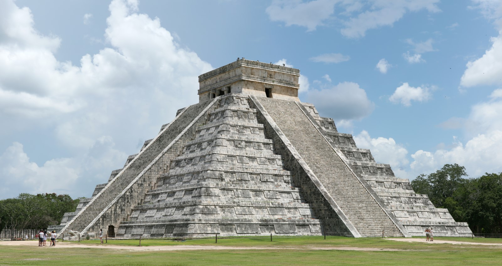
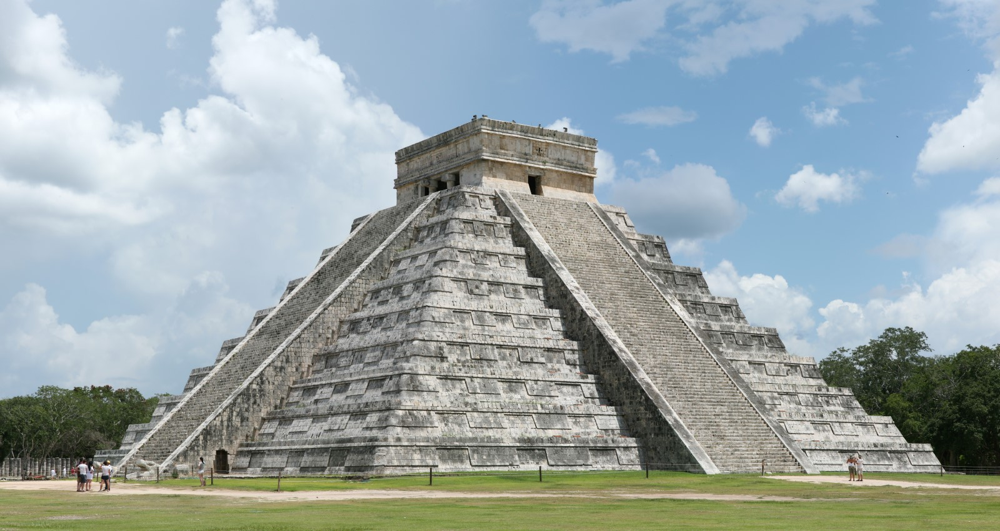
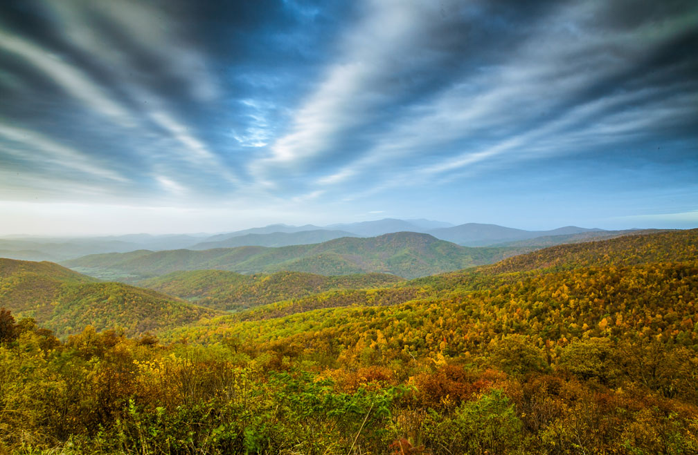
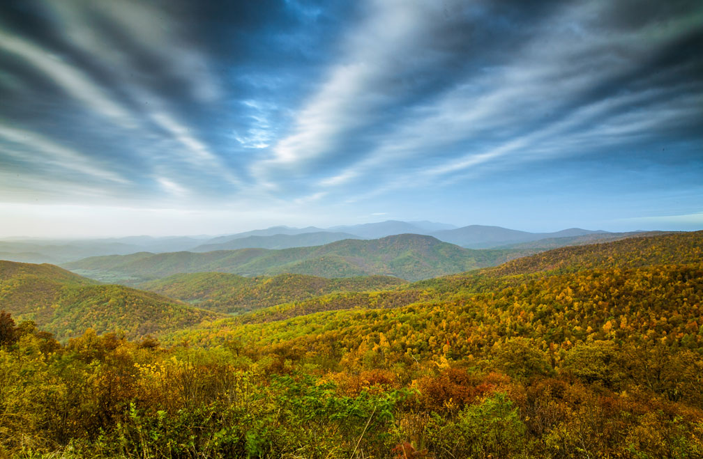

Amercia's Dawn

Approximately 2.4 million years ago, Earth experienced a global decrease in temperature known as the Great Ice Age. During this time period, giant sheets of ice known as glaciers form over the ocean. This caused ocean levels to decrease around the world.
The decrease in ocean levels caused large tracks of land that were previously covered by water to appear. These tracks of land are known as land bridges, as they often connnected previously isolated landmasses and facilitated the migration of various organisms and people between continents. The most notable land bridge formed during this period was the Bering Land Bridge, connecting what are today Russia and Alaska. This land bridge was important because before the formation of this land bridge, the Americas had been isolated from the rest of the world.


The first people to arrive in the Americas were nomatic groups from modern-day Siberia. These groups made the daring journey across the Bering Land Bridge, and from there they gradually spread throughout continent both continents. These people would become what we know today as the Native Americans.


 

Although the natives lacked the resources to become as advanced as their western counterparts, they still developed many diverse cultures, each uniquely adapted to its environment. This was especially true for the natives in Southern and Central America, where large advance societies had formed.
For instance, the Inuit people of the Arctic built homes from snow and hunted seals, while the tribes of the Southwest, like the Hopi and Zuni, developed irrigation systems to grow corn in arid environments. The Plains tribes, like the Lakota and Cheyenne, became expert buffalo hunters, making use of every part of the animal.

The period from 800 to 1500 AD was marked by the rise and fall of great Native American civilizations. The Pueblo peoples of the Southwest built impressive cliff dwellings and cultivated complex agricultural systems. Meanwhile, in the Mississippi River Valley, the Mississippian culture erected enormous earthen mounds and created intricate artworks.
In the 15th century, the Iroquois Confederacy, also known as the Haudenosaunee, was formed in the Northeast. This union of five (later six) tribes is one of the earliest examples of a democratic system, significantly predating the United States.


 



The story of America's discovery begins with Christopher Columbus. Columbus, an Italian explorer, was sponsored by the Spanish monarchs Ferdinand and Isabella to find a new sea route to Asia. In 1492, he sailed west with three ships and landed in the Bahamas, marking a pivotal moment in world history. While Columbus believed he had found a new route to the East Indies, he had, in fact, arrived in what Europeans would come to call the 'New World'.
Following Columbus, other European explorers, including Amerigo Vespucci, for whom America is named, began to realize that these lands discovered were not part of Asia, but an entirely different continent. Throughout the 16th century, explorers from various European nations sailed to the Americas, mapping the coastlines and making contact with indigenous peoples.

The 17th century saw the beginning of permanent European settlement in what would become the United States. Over the coming centuries, the English, Spanish, French, and others would establish more colonies, leading to the formation of the United States.

In the early 1600s, the 'New World' was still a relatively unknown place to Europeans, full of potential and mystery. It was in this context that Jamestown, Virginia, the first permanent English settlement in North America, was established in 1607. Jamestown was a commercial venture by the Virginia Company, an English firm that planned to make money by sending settlers to America to find gold and silver and by establishing a trade route to Asia.
A little more than a decade later, in 1620, a group of English Puritans known as Pilgrims sailed on the Mayflower and established Plymouth Colony in present-day Massachusetts. Seeking religious freedom, these Pilgrims had a challenging start. However, with the help of local Wampanoag tribe, they were able to survive and, in 1621, they celebrated a successful harvest with a feast that would later be known as the first Thanksgiving.
Throughout the 1600s, other English colonies were established along the Atlantic coast. These would become the 'Thirteen Colonies,' including New Hampshire, Massachusetts Bay, Rhode Island, Connecticut, New York, New Jersey, Pennsylvania, Delaware, Maryland, Virginia, North Carolina, South Carolina, and Georgia. Each had its unique characteristics and development. Some were founded for religious freedom, others for business ventures, and still others as penal colonies.
The settlers had to adapt to new environments and create sustainable ways of life. They learned to grow new crops, such as tobacco, which became a profitable export for colonies like Virginia. However, this prosperity came at a price, as settlers began to rely on the forced labor of enslaved Africans and indentured servants to cultivate these labor-intensive crops.

The European settlers' arrival had profound impacts on the Native American tribes living in these areas. There were periods of both peaceful coexistence and violent conflict. While some Native American tribes traded and shared agricultural techniques with the newcomers, others resisted the encroachment on their lands, leading to a series of conflicts.

Recreation of the Jamestown settlement in the Colony of Virginia.
Fun Fact: Virginia was the first permanent English colony in the New World.

Recration of a building in Plymouth, the site of the first Pilgrim settlement, founded in 1620.
Fun Fact: Massachusetts Bay Colony was founded by the Puritans, a group of religious separatists seeking a place to live and worship free from persecution.
Panting of Portsmouth, New Hampshire from across the Piscataqua River.
Fun Fact: New Hampshire was the first of the original 13 colonies to declare independence from England.
Recration of some buildings in St. Mary's City.
Fun Fact: Maryland was the first colony to be governed by a proprietary owner.

Recration of the Parker House in Old Saybrook, Connecticut. Believed to be one of the first buildings built in Connecticut.
Fun Fact: Connecticut is known as the "Constitution State" because it had America's first constitution, the "Fundamental Orders," in 1639.
Panting of Newport Harbor, a famous site in Rhode Island.
Fun Fact: Rhode Island is the smallest US state by area.

Old Swedes Church in Delaware, one of the oldest churches in America, built by the first Swedish settlers.
Fun Fact: Delaware was the first state to ratify the U.S. Constitution.
A recreation of a building in Bath, the oldest town in North Carolina.
Fun Fact: North Carolina and South Carolina were originally one colony known as the Carolina Colony.
Panting of Charleston, South Carolina.
Fun Fact: South Carolina was one of the first colonies to declare independence from Great Britain.

A photo of a Quaker meeting house in Burlingtion, New Jersey created in 1678.
Fun Fact: New Jersey was named after the Isle of Jersey in the English Channel.

A painting of The Castello Plan city map of Amsterdam, located in New York or New Amsterdam under Dutch rule.
Fun Fact: New York was originally a Dutch colony called New Netherland before it was surrendered to the English in 1664.

A painting of historic Philadelphia, a major city in Pennsylvania's early history.
Fun Fact: Pennsylvania was founded by William Penn, a Quaker, to provide religious freedom.

A painting of historic Savannah, the oldest city in Georgia.
Fun Fact: Georgia, the last of the original thirteen colonies, was originally created as a buffer zone against Spanish Florida.